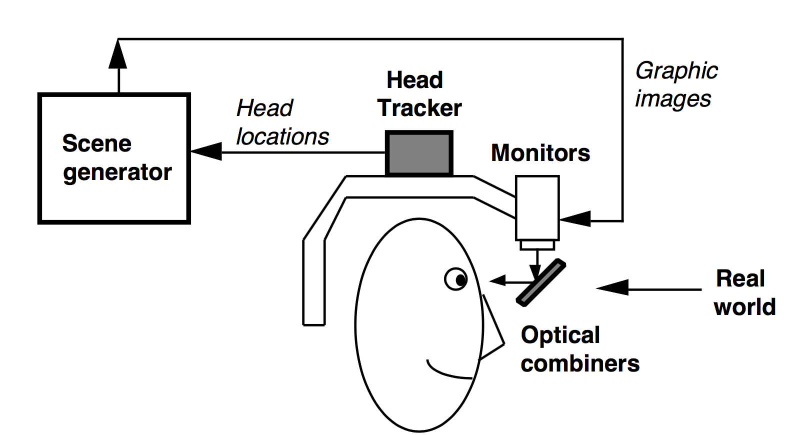
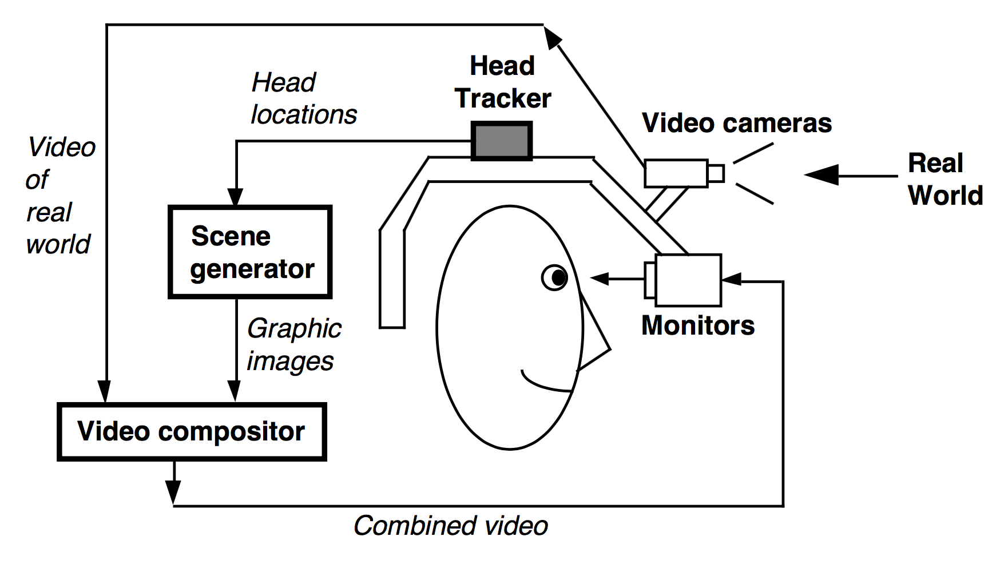
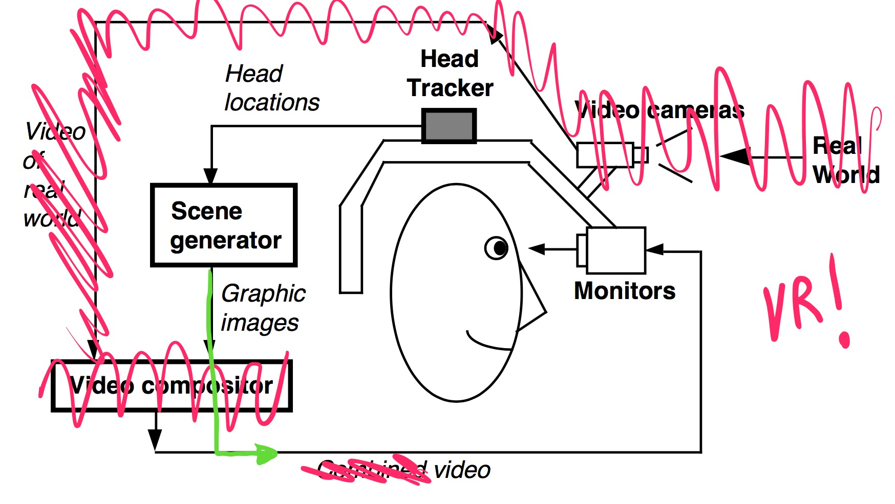
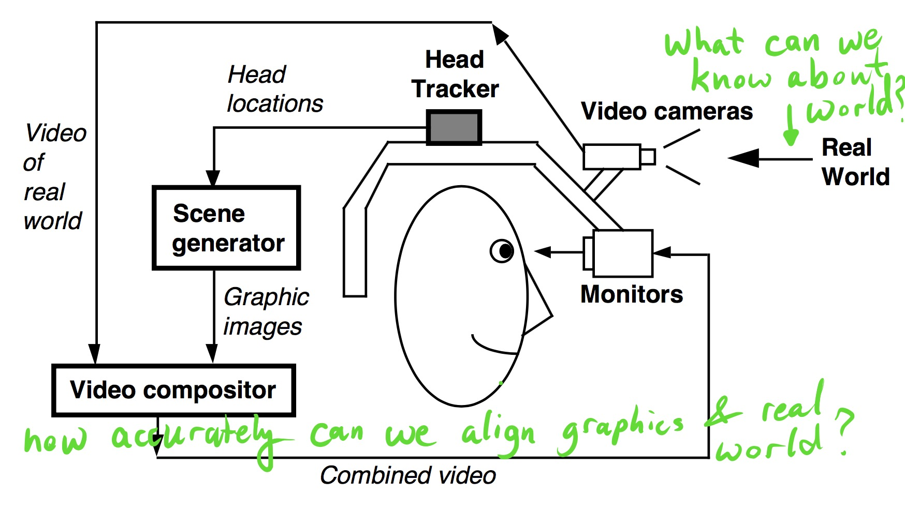
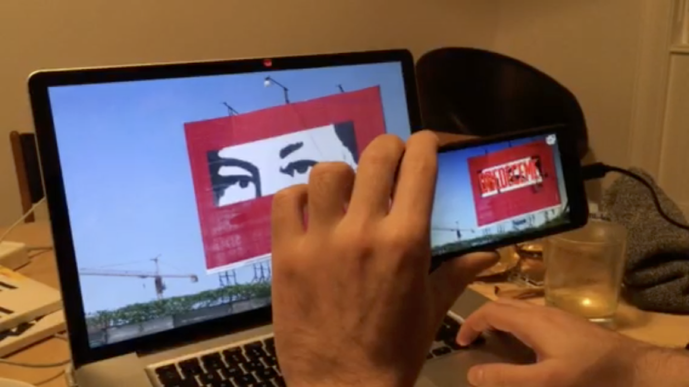
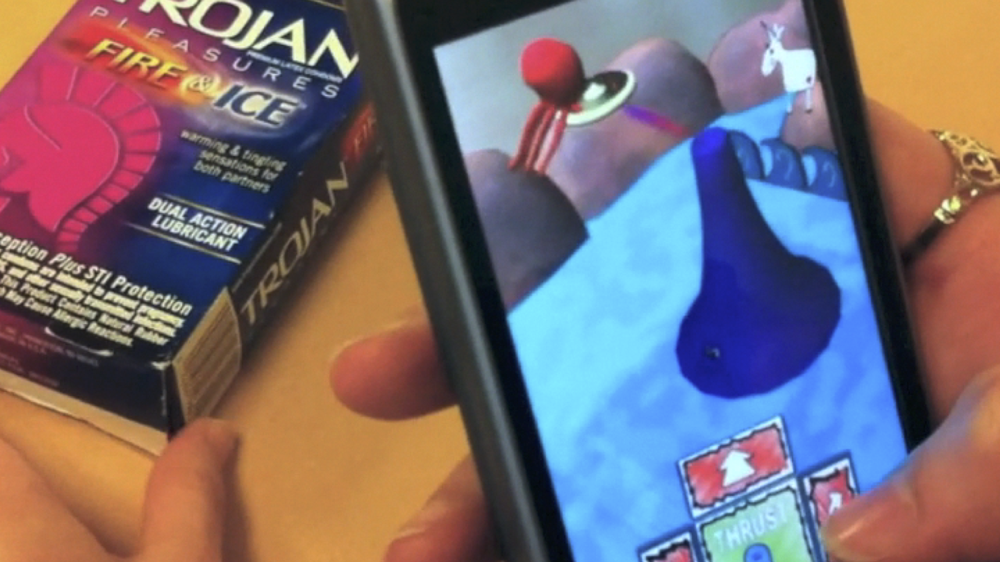

The Argon Project
The Past, Present and Future of AR on the Web
Blair MacIntyre Gheric MacIntyre
When people think of AR, they often think of movies like The Terminator
or the heads-up displays in video games.
More recently, Google appropriated the term for Glass, which isn't surpising.
It conjures a more interesting vision of the future than "head's up display"
What is AR?
(or MR or Holographic Computing?)
Mixing media with a registered in 3D , in real-time
Other approaches to context-based media:
Heads-up-Displays (Glass)
Map mashups (Ingress, Pokemon GO)
Geofencing (alerts)
Which is not to say that there's anything wrong with a small, lightweight,
heads-up display for giving continuous access to contextually relevant information.
Until all aspects of AR technology improve dramatically, we aren't going to be
able to do much more in something that could be worn all the time. Beyond
wearable heads-up displays there are other ways we can deliver location or
content-based content to users, and while some call themselves AR, those are
not what I'm focusing on here.
When I talk about AR, I'm referring to the idea the NASA and Boeing folks had
when they coined the term, namely mixing media with a person's perception
of the world, registered in 3D. I don't limit AR to just visual media, or
to specific display technologies.
I say this not to start an argument about what is or isn't AR; rather, I
simply want to clarify what I am thinking about when I use the term.
Ivan Sutherland, "The Ultimate Display", mid-1960's
Other popular ideas including medical, military and industrial applications,
vertical market applications such as for workers engaged in equipment maintenance,
food safety and factory inspection.
I think everyone here has some idea about how AR could be used. I've been
doing AR research for about 25 years, and myself and others have explored
a wide variety of uses of AR. Here I've including some pictures
of some of the more popular consumer facing ideas, including games, educational applications in health and math,
mixed-reality mirror worlds, room-scale interactive stories,
visualizing building construction
and end-user training for equiment maintenance.
One of the most exciting uses of AR is to create collaborative experiences,
for both colocated or remote participants. While we've imagined these for years
it's finally becoming possible to actually deliver such experiences, illustrated
by the Hololens use of Skype for remote assistance. Many people have imagined or
experiemented with multiple games, and with using avatars in the place
of remote participants in meetings or other experiences.
At Georgia Tech, we've recently prototyped a classroom for CS education, using
projection AR based on Microsoft Research's RoomAlive software, where we
building on what we know about studio-based education pedagogy to
improve CS education by continuously explosing the hidden work products students
are creating as they learn to program.
This idea of passively and continuously exposing hidden work to
facilitate collaboration or education is very powerful, and may one day
represent a major win for AR technologies.
AR Technology
Before diving in, I wanted to comment on some terminology that seems
to derail conversations about AR these days.
Head Mounted Displays
It matters more what the user wants to do when deciding on platform.
First, the companies in the space have been trying to distinguish themselves
from each other with terms that pretty much mean the same thing. Google used
AR to mean heads-up-displays, so Microsoft decided to use Holographic
computing to distinguish Hololens from Glass. And then Magic Leap and others
decided to use Mixed Reality to emphasize that their displays do a better
job of mixing graphics with the world than the traditional approach to see
through displays. I understand why they did this, from a marketing
and branding perspective, and even agree with the distinctions each of these
companies are making, but the downside is there there are a bunch of false distinctions
and confusion when people try to talk about the technologies. To me, these
terms are interchangable.
Similarly, I think it's worth remembering that a lot of what is done in
AR using different technologies is often done for expedience. There are good
reasons for picking different technologies for different applications, and its
often the case that the wrong technologies were used for experiences in the past
simply because they were the only ones available. For example, a lot of our
work on AR games would have been much more suited to HMD's like Hololens, but
the tech wasn't available. I've seen a lot of discussion where people are
proposing AR experiences on new HMDs and contrasting them with the work
people have done in the past, and presenting that past work as flawed because
the developers chose no not use HMDs.
(Perhaps HMD's will dominate when
And, in particular, there are always tradeoffs. Until tracking, world modeling
and understanding allows us to present graphics to users at a level of quality
you see on sports broadcasts on TV, HMDs will not be feasible for continuous use.
Furthermore, issues like input, haptic feedback, collaboration and how these
displays fit into existing work practices will further impede them replacing
other display and input technologies.
Traditional (Handheld and Desktop) Displays
See-through or Video-Mixed


Ron Azuma. "A Survey of Augmented Reality" Presence (1997)
This definition goes back quite a while, and most AR systems correspond
roughly to the diagrams Azuma had in his 1997 paper. While he focused on
head-worn displays, the same basic elements exist in all AR systems: sensing
of the world and where the display is, generating appropriate media and displaying
content such that it appears to align with the relevant parts of the world.
Video-Mixed
Ron Azuma. "A Survey of Augmented Reality" Presence (1997)
Video-Mixed = VR?

Ron Azuma. "A Survey of Augmented Reality" Presence (1997)
For those familiar with VR ...
Video-Mixed = VR + World?

Ron Azuma. "A Survey of Augmented Reality" Presence (1997)
Sense the world relative to display
Inside-out
(e.g., computer vision & depth sensing, object recognition)
Outside-in
(e.g., GPS, Vive Lighthouse)
The Challenge of AR
Can only display relative to what we know or can sense
Must display in real time (akin to VR)
Core problems are displays ,
sensing , and
services for world knowledge.
Why the Web?
Leverage all things webby!


These are about both ephemeral apps, and apps that people may not want to
install for various reasons.
Our Beliefs about AR and the Web
1: There will be Apps, Not Just "Content"
(or something like apps)
Non-trivial content requires code and interaction
Security and privacy require sandboxing
2: Will want to run many apps at once
Current focus on individual apps w/ full control
As with 2D/3D before, user's will want to mix and match
Mash up pages/apps, mix 2D/AR/VR content, mix displays and sensing
3: Decouple apps from "Reality"
Experience AR content without going to "the place"
Different perspectives and viewpoints
Users might prefer AR, VR or desktop experience
4: AR is "just" a capability
There will still be apps, but not "AR apps"
AR something you add to a system or app
Think about what AR is good for and how it fits into web ecosystem
The "Current" Web is Not Quite There
Local Video: Latency, no camera intrinsics
Tracking: Overheads and Speed
Browser Model: Everything inside app
W3C standards, AWE.js, various Web-for-Native plugins
Exploring Adaptive Content in Argon2
First-class notion of a Reality
Any "representation of Reality" can be used, such as:
360 images or video, Google Streetview, 3D Models of the World,
See-thru (video-mixed or optical)
As long as Reality can provide
View of reality
Camera pose for viewer
Camera frustum for viewer
Reference Frames
Standard frames (currently):
User Pose
Local Origin
Floor
Stage
Implications for Application Developers
Applications are reactive, must adapt content/layout in real-time
Applications only render augmentations (important!)
Augmentations can be overlaid on any "representation of reality"
Argon4 and Other browsers
argon.js and (soon) Argon4 are Open Sourcehttp://argonjs.io
This Presentation is Running in Argon4
on an iPhone
Using argon.js + reveal.js + aframe.js + argon-aframe.js
Computer vision AR w/ Vuforia
Planetary scale geographic AR
Custom Reality (Panorama)
Added Argon to reveal.js Demo
Add some new scripts up top
<script src="resources/js/aframe.js"> </script>
<script src="resources/js/argon.js"> </script>
<script src="resources/js/argon-aframe.js"> </script>
Add a simple AFrame scene down below
<ar-scene>
...
</ar-scene>
Adjust the CSS a bit, add some Javascript and we're off...
Simple Declarative 3D AR Content
<a-box position="0 3 -10" radius="0.25" color="gold"
rotation="0 0 45">
<a-animation attribute="rotation" from="0 0 45" to="0 360 45"
dur="1000" easing="ease-in-out"
repeat="indefinite">
</a-animation>
</a-box>
A-Frame markup to create a spinning gold diamond
Geospatial frames of reference
<ar-geopose id="GT" lla="-84.394539 33.772501" userotation="false">
<a-entity fixedsize="20" billboard>
<a-plane rotation="0 0 0" width="2.9" height="4" src="#buzzpin"
transparent="true" ></a-plane>
<a-entity css-object="div: #gtdiv" scale="0.02 0.02 0.02"
position="0 4 0"
showdistance="Tech Tower @ GT<br>Atlanta, GA, USA<br>It is ">
</a-entity>
</a-entity>
</ar-geopose>
A-Frame markup to put a pin at Georgia Tech
Simple Vuforia Setup and Use
<ar-scene vuforiakey="#vuforiakey"
vuforiadataset__stonesandchips="src:url(StonesAndChips.xml);">
<a-assets>
<a-asset-item id="vuforiakey" src="key.txt"></a-asset-item>
</a-assets>
<ar-frame id="frame" trackvisibility="true" visible="false"
parent="vuforia.stonesandchips.stones">
...
</ar-frame>
</ar-scene>
A-Frame markup to put content on a visual target
Web Ecosystem is Rich and Diverse
Many tools, from the simple to the elaborate
Mashups may suggest new ways of creating 3D!
At Mozilla
Visiting to help make AR pervasive on Web
Leverage Mozilla Research: WebVR, Servo, WebAssembly, ...
Leverage Mozilla's Influence: peers, standards, ...
Make sure the WebAR is open, safe and secure!
My Hope: Enable Mixed Media Mashups
2D + 3D + AR + VR + mobile + desktop + HMDs + ...
Focus on User choice
Web for AR/VR and in AR/VR
My Plans ... (take w/ grain of salt!)
Time Frame
Activity
Goals
now
"Web Now"
use cases
3-12 months
experimental apps
technical experiments
1-2 years
W3C, etc
standards
1-3 years
Firefox
WebAR
1-5 years
ecosystem,
HMDs, IoT,
Enabling Technology
Low-latency Video Processing Pipeline
Video frames into GPU/JS + vision processing
(WebRTC, workers, WebAssembly, Servo, etc)
Flesh out Needed Services
Already massive amount of content tied to the world
Camera Intrinsics database(eventually: W3C media-capture-depth, KHRONOS OpenKCam, platform APIs ...)
Need new services for object or location-based search and discovery ,world knowledge , object recognition and tracking , ...
What Might a First AR Browser App Look Like?
How Might This Be Done Using Gecko (or Servo)?
Keep: multiple apps, custom realities
Add: live video access, custom device support (Tango, Hololens, etc)
while observing user control of privacy and ensuring security
Nice Features
Efficiency
Privacy / Security
Clean Multi-app Integration
Outstanding Isses
Battery
Device position (GPS, indoor localization)
Camera intrinsics
Experiment with Browser Experience
Beyond Windows+Tabs model
AR/VR-centric, perhaps AR/VR-first?
Link to the world, object recognition-based, ...
Experiment with Use Cases for Web-AR
AR at intersection of Web, context/IoT, and 3D/VR
Perhaps Aim for a Complete AR/VR/2D Experience?